- 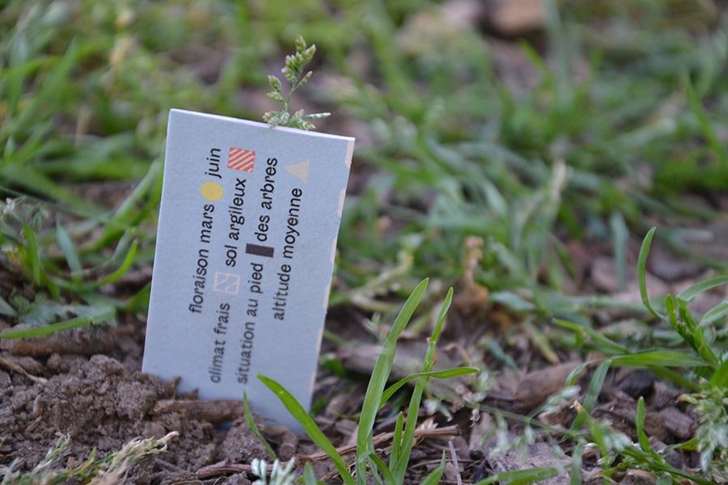
- 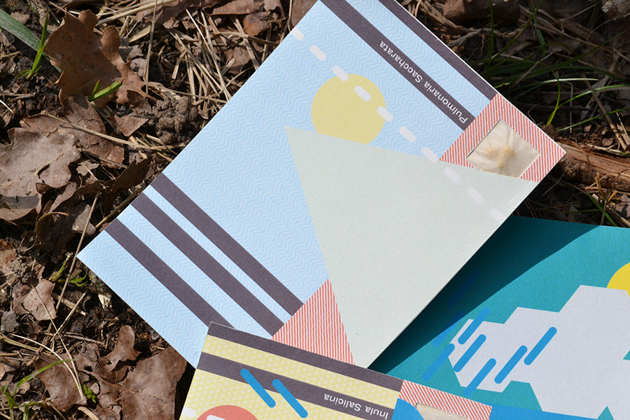


- 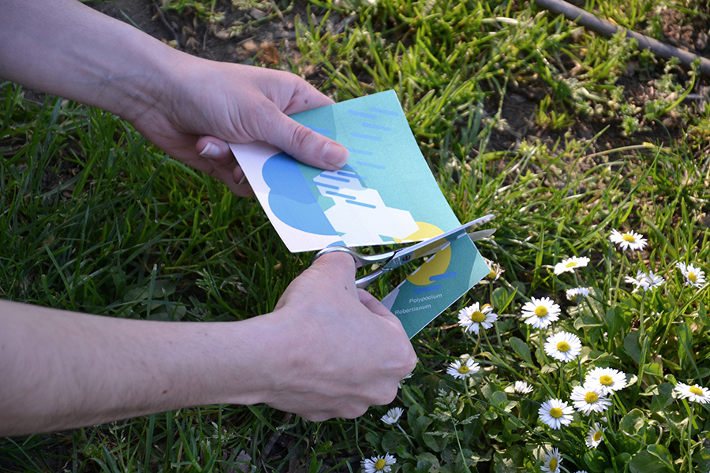
- 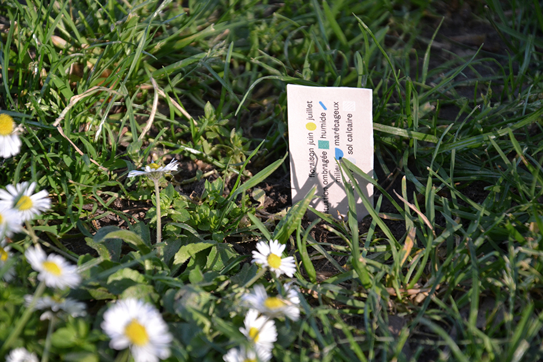
3 espèces rares ont été découvertes dans le Parc Naturel Régional de la Sainte Baume, Var (13).
Afin de cultiver et propager ces espèces, j’ai crée des cartes postales propres à chaque végétal, pour le parc.
Le destinataire pourra découper la carte postale et planter le tuteur-étiquette pour que le papier se décompose et libère la graine.
Le paysage de la carte postale correspond au milieu dans lequel doit évoluer la plante, sa légende se trouve au verso. Ainsi, en envoyant une carte postale, le randonneur contribuera à la transmission de cette biodiversité
— mars 2017
- 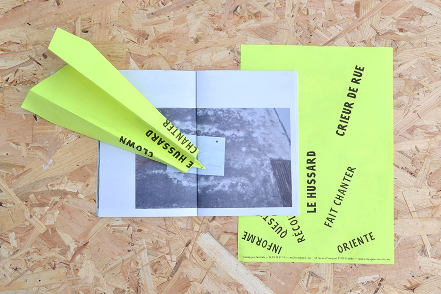
- 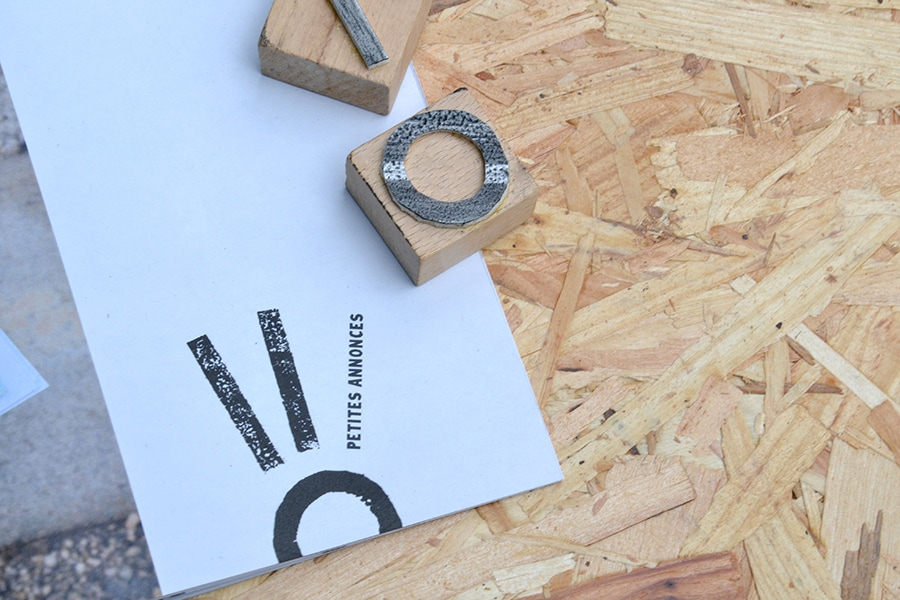
- 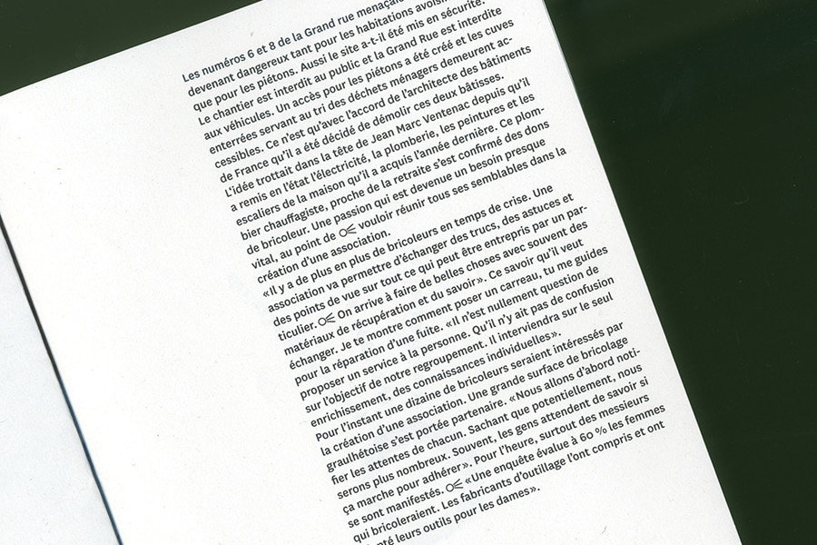
- 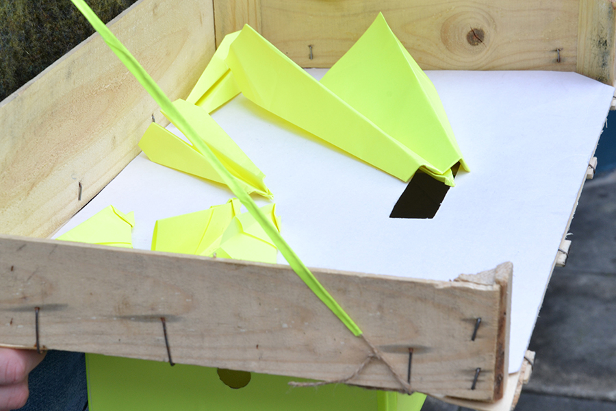
- 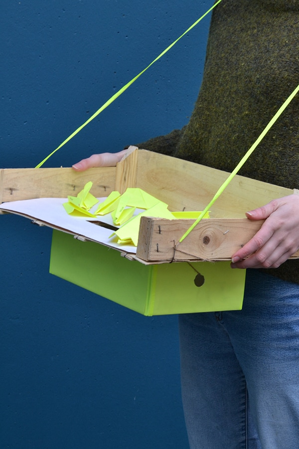
Outils réalisés pour Camille Latteux, crieur de rue à Graulhet, ce métier consiste à récolter les messages des habitants dans le but de les crier le jour du marché et faire entendre la parole des citoyens.
> Comment décomplexer la parole des habitants ?
Mise en place d'une récolte sous forme de jeu avec des avions en papier et d'une urne porte-avion. Les marques de pliage deviennent alors son identité, les mots rayonnent.
> Comment créer un dialogue entre la mairie et
les habitants ?
Création d'une gazette mensuelle mêlant les informations conventionnelles de la mairie et la parole des habitants, telle une interface.
— janvier 2017
- 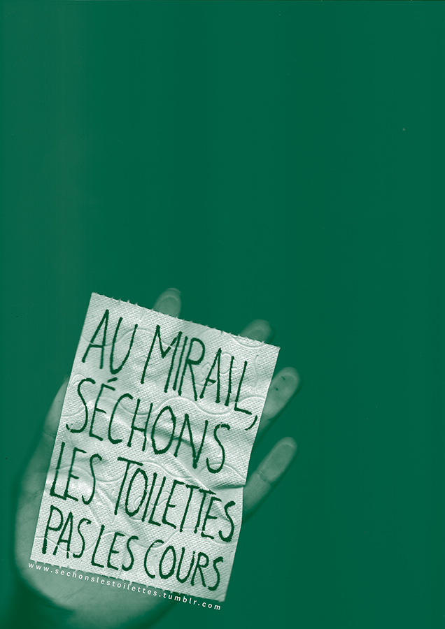
- 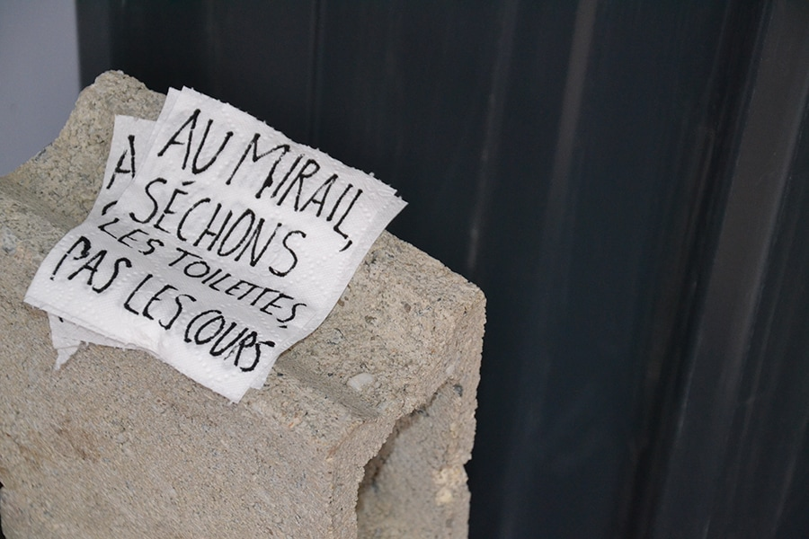
Affiche et flyer pour le projet d’installation de toilettes sèches dans la fac du Mirail de Toulouse.
— novembre 2016
- 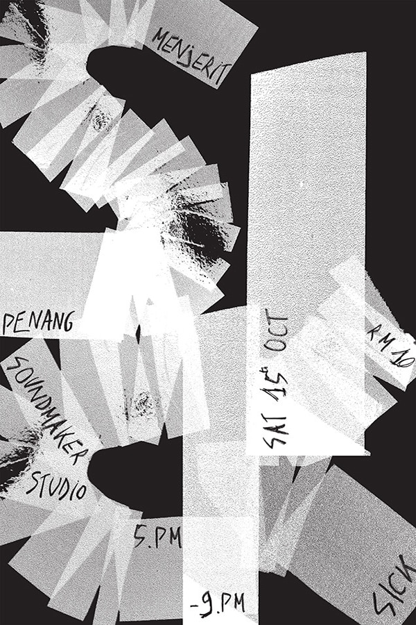
- 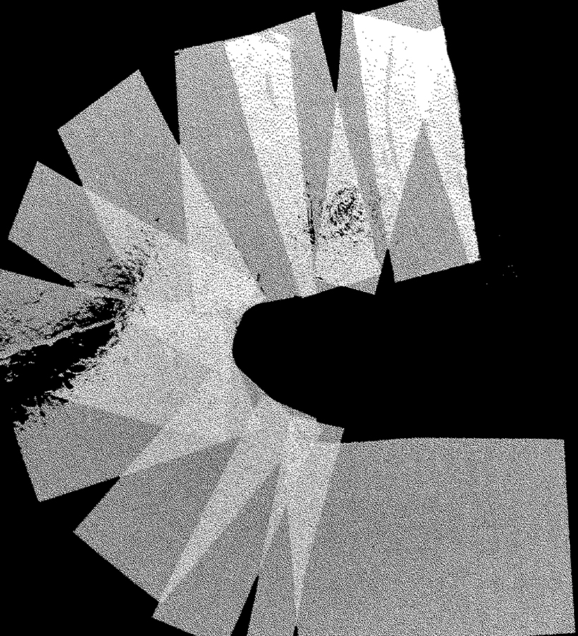
Affiche pour le groupe malaisien S.I.C.K.
— octobre 2016
- 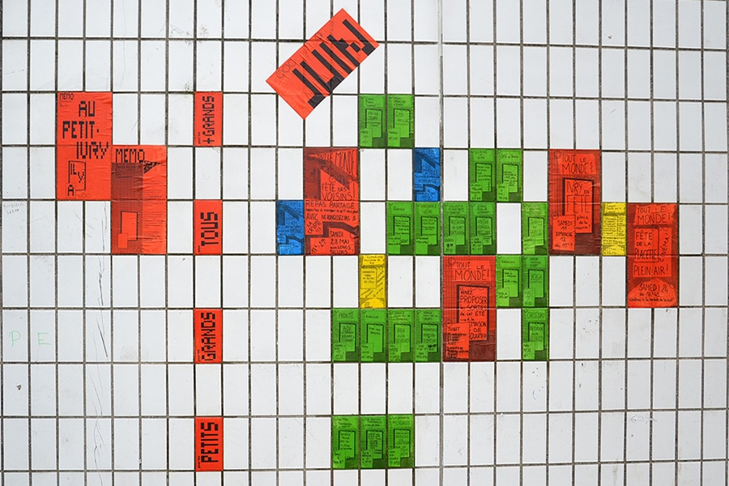
- 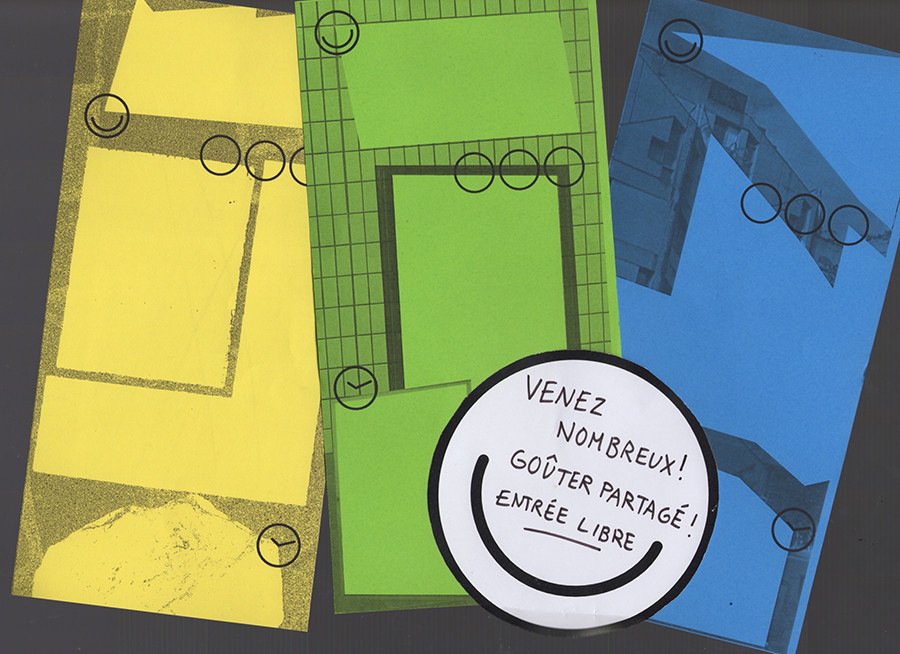
MEMO : Maison de quartier En MOuvement
Système d’affichage autonome de la programmation de la Maison de Quartier du Petit-Ivry et chasse aux trésors urbains pour inviter les ivryens à (re)découvrir leur quartier, en collaboration avec Ne Rougissez Pas.
— juin 2016
- 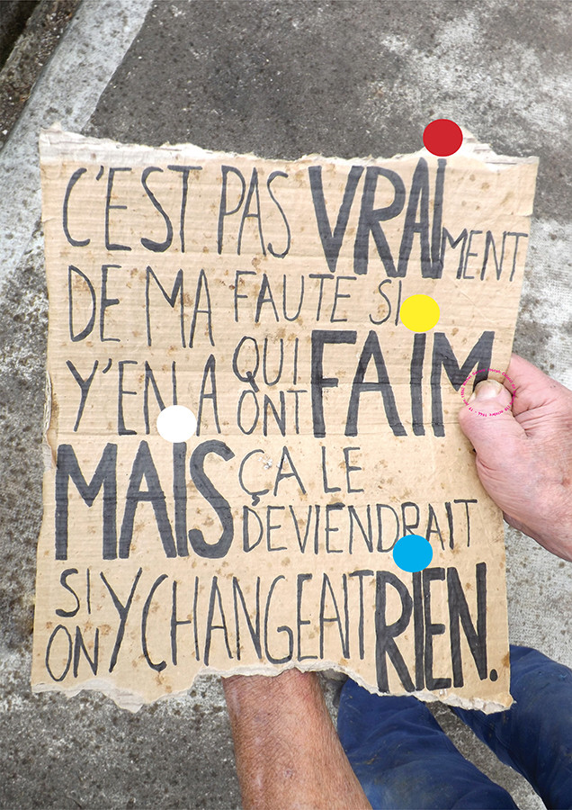
- 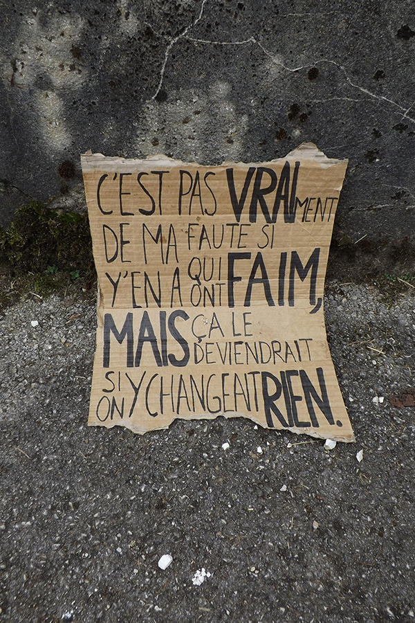
- 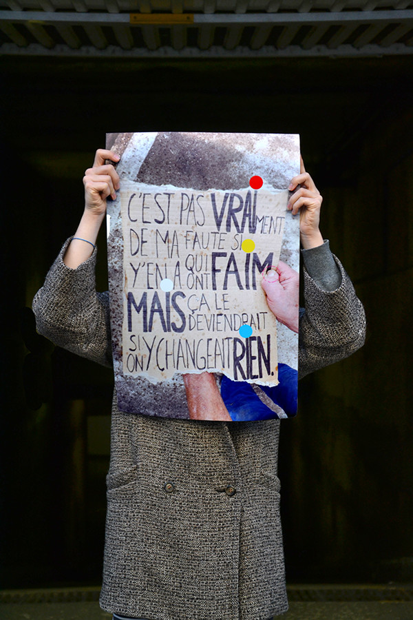
Affiche rendant hommage à Coluche pour le triste anniversaire des 30 ans des Restos du Cœur.
— janvier 2016